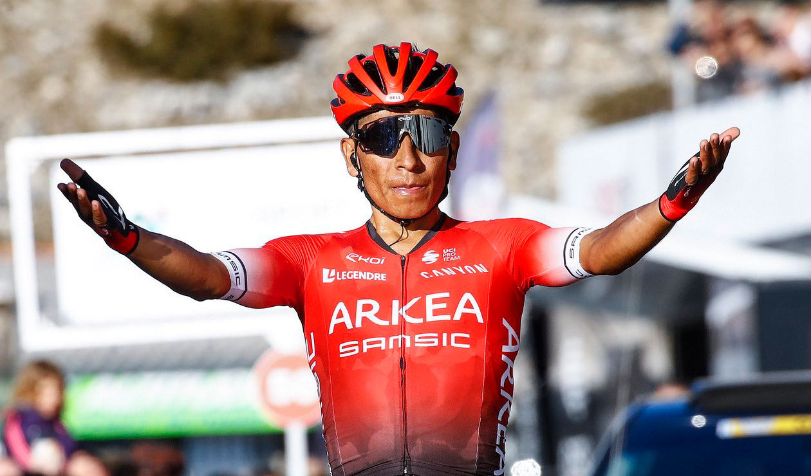

Nairo Alexander Quintana Rojas nació el 4 de febrero de 1990 en la ciudad de Tunja capital del departamento de Boyacá, Colombia. Es un ciclista profesional de ruta, actualmente corre para el equipo francés Arkea Samsic de la categoría UCI ProTeam.
Con 44 victorias de etapa como profesional y 20 títulos lo convierte en el ciclista colombiano mas ganador de todos los tiempos.
Infancia
Creció en la vereda la concepción del municipio de Arcabuco (Boyacá) un pequeño municipio ubicado a 34 kilómetros de la ciudad de Tunja donde junto a sus padres Eloisa Rojas y Luis Quintana y sus hermanos labraban la tierra. La bicicleta hacia parte de su vida en el día a día ya que este era su medio de transporte para ir desde y hacia su escuela, en estos recorridos se dio cuenta de su potencial para el ciclismo ya que en su bicicleta de acero subía el alto del Sote mejor que ciclistas que tenían mejor equipamiento.

Primeros años
En el 2009 ingreso al club Deportivo Ediciones Mar de Tunja donde se encamino hacia el profesionalismo, ese mismo año fue fichado por el equipo de categoría continental Boyacá es para vivirla equipo con el que correría por primera vez en Europa siendo el mejor sub 23 en la vuelta a la comunidad de Madrid.
En el 2010 pasó al equipo Café de Colombia – Colombia es pasión y con solo 20 años fue el campeón del tour del porvenir (Tour de l'Avenir) ganando las dos ultimas etapas de montaña.
Para el 2011 el equipo ascendió a la categoría Profesional Continental (segunda división) lo que les permitió ir a la Volta a Cataluña , carrera en la que Quintana gano la clasificación de la montaña.
Movistar Team
En el 2012 llegaria al español de categoría World Tour inicialmente por dos temporadas.
Su primer titulo fue en el mes de marzo de ese mismo año en la Vuelta a Murcia y dos meses después seria segundo en la Vuelta a la comunidad Valenciana
Su contrato con la escuadra española terminaría en 2019 luego de 8 años de triunfos, amores y odios. En este equipo lograría triunfos de etapas y grandes títulos representativos para su carrera y para el continente americano; En 2014 se convertiría en el primer latinoamericano en ganar el Giro d’Italia, lograría podio en el Le Tour de France en 2013 (2), 2015 (2) y 2016 (3) y seria el segundo latinoamericano en coronarse campeón de la vuelta España detrás de Lucho Herrera quien la gano en 1987.

Arkea Samsic
El 2 de septiembre de 2019 fue oficialmente anunciado su paso a esta escuadra francesa de categoría Profesional Continental mediante un video en Instagram, siendo un secreto que se había anunciado a gritos, para muchos una mala decisión por bajar de categoría, para otros como una oportunidad de recuperar el gran nivel que mostro en años anteriores.
Su primera competencia con el equipo frances seria en los nacionales de ciclismo del 30 de enero al 2 de febrero del 2020 donde quedaría segundo en la prueba contrarreloj individual.
En tierras europeas debuto en el Tour de la Provence (Francia) que se disputo entre el 13 y el 16 de febrero, ganaría la tercera etapa con fin el Mont Ventoux se vestiría de amarillo y el 16 alzaría los brazos en señal de victoria adjudicándose el su primer titulo con el equipo frances.
El Tour de los Alpes Marítimos y de Var (21 al 23 de febrero 2020) seria su segunda competencia con el equipo, allí ganaría la ultima etapa y se convertiría en campeón del Tour siendo este su segundo titulo en menos de un mes de competencia con el equipo.

Tanto Quintana como sus seguidores esperan que este sea el año donde se logre el sueño amarillo para ver en lo alto del podio a otro colombiano y en una sola voz se escuche el himno nacional en los campos Elíseos.